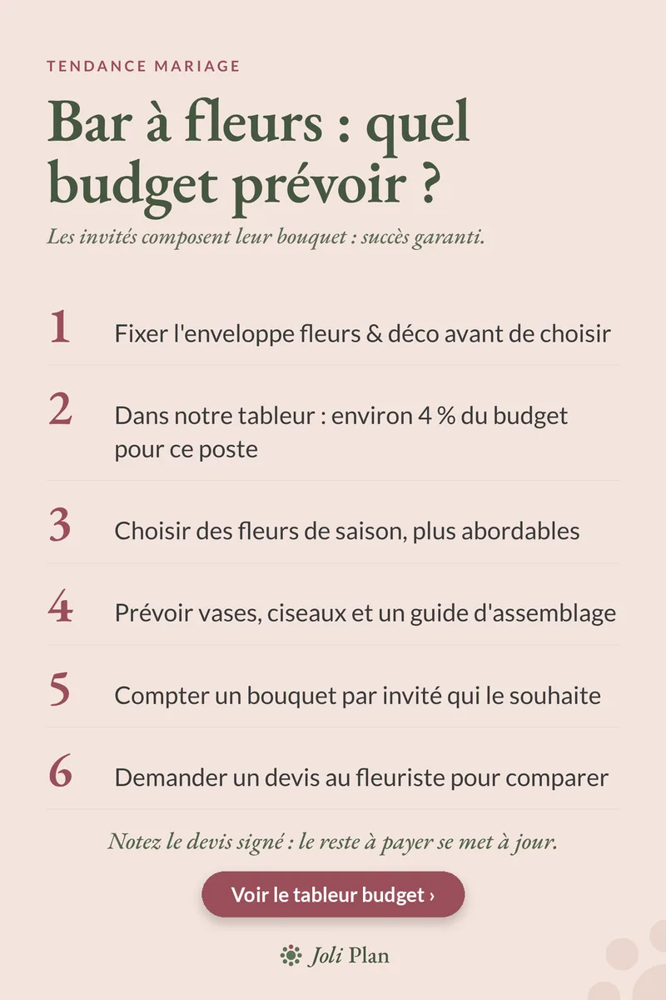

Budget de mariage
Bar à fleurs de mariage : quel budget prévoir ?
Mis à jour le 11/11/2026
Au bar à fleurs, les invités composent eux-mêmes leur bouquet : c'est une animation qui plaît, mais qui se prépare comme n'importe quel poste du budget. Voici six points pour savoir combien prévoir et ne pas être surpris.
Voir l'organisateur de mariage sur Etsy ›

Les 6 points à vérifier
- Fixez l'enveloppe fleurs et déco avant de choisir : le bar à fleurs se loge dans cette enveloppe, il ne s'ajoute pas par-dessus.
- Repérez la part prévue pour ce poste. Dans notre tableur, la ligne fleurs et déco représente environ 4 % du budget total.
- Choisissez des fleurs de saison : elles sont en général plus abordables et plus fraîches.
- Prévoyez le matériel : vases, ciseaux et un petit guide d'assemblage pour aider les invités.
- Comptez un bouquet par invité qui le souhaite, pas forcément un par personne : les enfants ou les plus timides n'en feront pas tous.
- Demandez un devis au fleuriste pour comparer avec ce que vous aviez estimé.
Comment poser le budget, concrètement
Partez de votre budget total et regardez la ligne fleurs et déco. Si le bar à fleurs y prend trop de place, il ne reste plus rien pour les centres de table ou la cérémonie. Mieux vaut décider d'abord ce qui compte le plus pour vous, puis répartir.
Pour estimer la quantité, comptez d'abord combien d'invités feront vraiment un bouquet. Une fois ce nombre posé, le fleuriste peut vous dire combien de tiges prévoir. Un seul devis ne suffit pas à juger : demandez-en deux, avec le même détail (nombre de tiges, vases fournis ou non, livraison).
Pensez aux petits à-côtés
Le bar à fleurs demande aussi une table, de l'eau pour les vases et quelqu'un pour le remettre en ordre en cours de soirée. Notez ces besoins dès maintenant : ce sont souvent eux qu'on oublie dans le budget.
Suivre le devis dans votre tableur
Une fois le devis signé, notez le montant et l'acompte. Le reste à payer se met alors à jour tout seul, et vous voyez d'un coup d'œil ce qu'il reste pour les autres postes.
Questions fréquentes
Quelle part du budget prévoir pour les fleurs et la déco ?
Dans notre tableur, environ 4 % du budget total, bar à fleurs compris dans cette enveloppe.
Combien de bouquets faut-il compter ?
Un bouquet par invité qui souhaite en composer un, pas forcément un par personne.